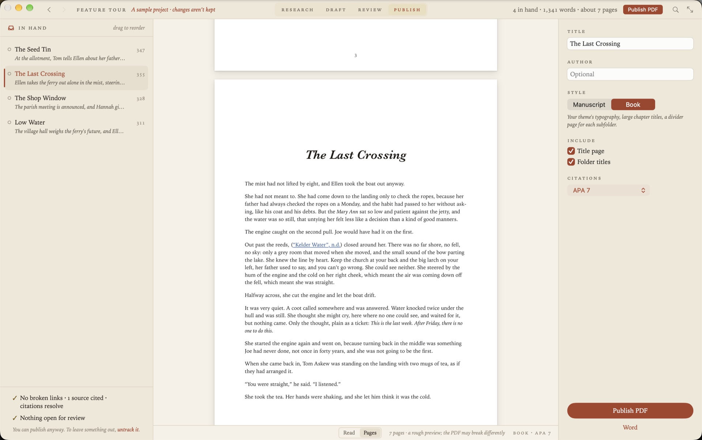
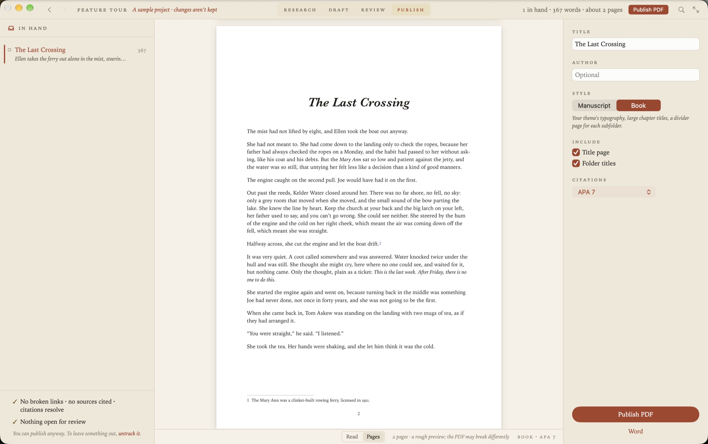

Markdown to PDF on a Mac
You have a Markdown file, or a folder of them, and you need a PDF that looks typeset and not printed from a browser. Grasmere is a Mac app that makes one from a single document in a keystroke, or from a whole book with a title page, contents and footnotes.

One document
Open the document and choose File ▸ Export ▸ PDF, or press ⌘P. Grasmere typesets it on A4 or Letter pages in your theme’s type and asks where to save it.
A folder of documents, as one PDF
Right-click a folder and choose Publish to PDF. Its documents are put in order on the Publish stage and read straight through, before anything is made. Each document becomes a chapter on a new page, titled by its first heading, and each folder inside becomes a part.
Give it a title, and an author if you like, then choose a style.
Two styles
- Manuscript is standard manuscript format, as publishers and agents ask for. Double-spaced 12 pt Times, one-inch margins, a title page with the word count, and the author, title and page number at the top of each page.
- Book is your theme’s typography, with large chapter titles, a divider page for each part, a contents page with page numbers, and a page number at the foot of every page.
Two boxes decide whether there’s a title page and whether folders get a page of their own. Untick both and a single document comes out as that document and nothing more.
What the PDF has
These are the things that separate a typeset PDF from a printed web page.
- Bookmarks for the parts, chapters and headings, in Preview’s sidebar.
- Links that work, to a heading, to another chapter or to the web.
- Footnotes at the foot of the page they’re referred to on, numbered from 1 in each chapter.
- Citations in APA, Harvard, Chicago or MLA, with the references after the last chapter.
- Tables, pictures and Mermaid diagrams.
- Code with its keywords, strings and comments coloured.

See it before you make it
The Publish stage has a Pages view that lays the whole thing out as pages of the style you chose, with the page count. It’s a rough preview, and the PDF itself may break a page differently.
Two lines beneath the list of chapters say what isn’t ready, such as a broken link, a citation that doesn’t resolve or a chapter still marked as a draft. You can publish anyway.
Other ways to do it
Pandoc makes very good PDFs from Markdown, by way of LaTeX. You’ll need a TeX installation, which is large, and some patience with templates if you want to change how the page looks. Many editors can print a Markdown preview to PDF, which is quick and gives you a web page on paper, without proper footnotes or a contents page.
Grasmere sits between the two. The typesetting is built into the app, so there’s nothing to install, and the choices are a few options and not a template language.
If LaTeX is what you want, Grasmere can write the .tex for you to compile elsewhere. See Using LaTeX with Markdown.
Questions
Do I need LaTeX or Pandoc installed?
No. The typesetting is built into the app.
What page sizes are there?
A4 and Letter.
How long does a long book take?
About 20 seconds for 500 pages. You can carry on reading the stage while it’s made.
Can it make a Word document instead?
Yes, from the same place. See Markdown to Word, and back again.
Make your first PDF.
Open a folder of Markdown files and choose Publish to PDF. The trial is free for 14 days.
Download for macOS Free for 14 days, then $14.99 once · macOS 15+Related
- Writing a book in Markdown
- Markdown to Word, and back again
- Using LaTeX with Markdown
- The Publishing guide
- More on writing in Markdown
Last updated .